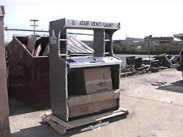
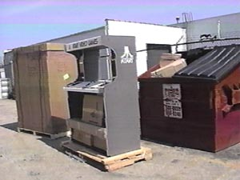

Atari's marketing recognized early on that having an in-presence such as
displays, demonstation systems, brochure racks and so on was important
to have maintain its leadership in the video game market. Atari
supplied its authorized sales centers with every conceivable form of marketing
products.
The Atari Historical Society recently had shipped in from 2 locations in
the United States to our New York Museum 2 brand new arrivals.
Each unit is a 1981 Atari 2600 in-store "POP" Point of Purchase display
demonstator. One unit is in near mint condition, the other
is going to require some time and careful work to restore it back to its
original condition. We proudly welcome these 2 new additions
to our ongoing effort to restore and preserve all things Atari.

One unit uncrated, the other still sealed in its shipped crate.